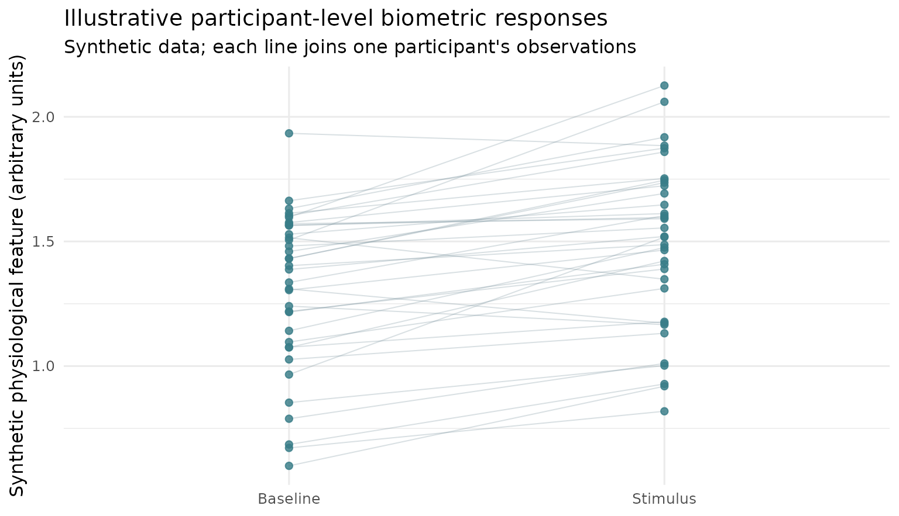
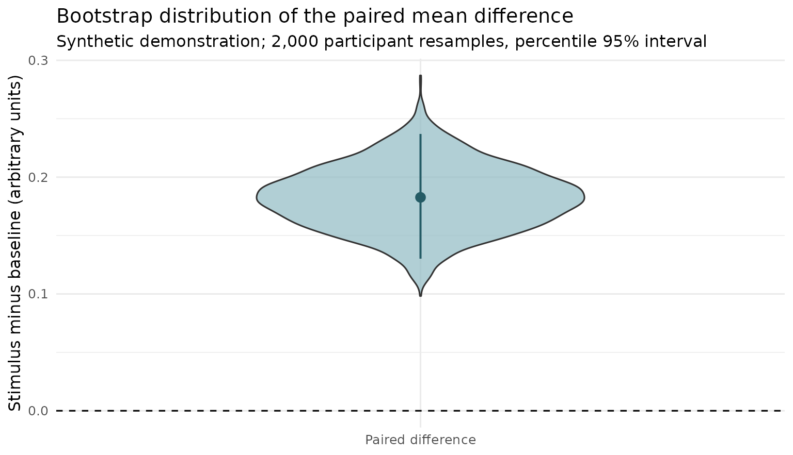

Estimation graphics: paired observations and effect uncertainty
Source:vignettes/dabest-estimation-gallery.Rmd
dabest-estimation-gallery.RmdAn estimation-first view of biometrics outcomes
The DABEST Python visualization grammar combines the distribution of observed outcomes with uncertainty around a declared effect size. The maintained R dabestr package is the appropriate choice for canonical Gardner–Altman and Cumming estimation plots, including its BCa bootstrap procedure.
The two graphics below are independent, synthetic
illustrations built with ggplot2, not copied from
DABEST or presented as validation data. They illustrate why participant
pairing matters for eye tracking, SCR, pupil and pulse features.
1. Show participant-level trajectories, not only a mean bar
set.seed(20261009)
n_participants <- 36L
demo <- data.frame(
participant_id = rep(seq_len(n_participants), each = 2L),
condition = factor(
rep(c("Baseline", "Stimulus"), n_participants),
levels = c("Baseline", "Stimulus")
),
response = rep(stats::rnorm(n_participants, 1.4, .28), each = 2L) +
rep(c(0, .22), n_participants) +
stats::rnorm(n_participants * 2L, sd = .11)
)
ggplot2::ggplot(
demo, ggplot2::aes(x = condition, y = response, group = participant_id)
) +
ggplot2::geom_line(alpha = .27, linewidth = .36, colour = "#718C96") +
ggplot2::geom_point(
size = 1.8, alpha = .82, colour = "#387C88"
) +
ggplot2::labs(
title = "Illustrative participant-level biometric responses",
subtitle = "Synthetic data; each line joins one participant's observations",
x = NULL, y = "Synthetic physiological feature (arbitrary units)"
) +
ggplot2::theme_minimal(base_size = 12)
2. Show the estimated within-participant contrast and uncertainty
The resampling unit here is the participant, not a
trial, fixation, frame, or SCR peak. This short example uses a
percentile bootstrap, which must not be relabelled as
the BCa bootstrap provided by dabestr.
control <- demo$response[demo$condition == "Baseline"]
stimulus <- demo$response[demo$condition == "Stimulus"]
participant_differences <- stimulus - control
effect <- mean(participant_differences)
replicates <- replicate(
2000L,
mean(sample(
participant_differences,
size = length(participant_differences), replace = TRUE
))
)
bounds <- stats::quantile(replicates, c(.025, .975), names = FALSE)
draws <- data.frame(panel = "Paired difference", effect = replicates)
estimate <- data.frame(
panel = "Paired difference", effect = effect,
lower = bounds[1L], upper = bounds[2L]
)
ggplot2::ggplot(draws, ggplot2::aes(x = panel, y = effect)) +
ggplot2::geom_violin(fill = "#8FBAC3", alpha = .7, width = .54) +
ggplot2::geom_pointrange(
data = estimate,
ggplot2::aes(ymin = lower, ymax = upper),
colour = "#245B65", linewidth = .7
) +
ggplot2::geom_hline(yintercept = 0, linetype = "dashed") +
ggplot2::labs(
title = "Bootstrap distribution of the paired mean difference",
subtitle = "Synthetic demonstration; 2,000 participant resamples, percentile 95% interval",
x = NULL, y = "Stimulus minus baseline (arbitrary units)"
) +
ggplot2::theme_minimal(base_size = 12)
When this figure is scientifically appropriate
A raw participant-level contrast can be useful for a prespecified between-person design, a complete paired participant comparison, or a participant-level summary with defensible denominators. It is not a replacement for mixed models, hierarchical resampling, a model-adjusted estimand, a repeated-measures agreement analysis, or a test of causal mediation. Vendor confidence scores and physiological constructs require separate calibration and validation evidence.
For the experimental package-native plotting APIs, see gpbiometrics research PR #69. Those methods remain under review; this page does not announce a CRAN version or scientific qualification.